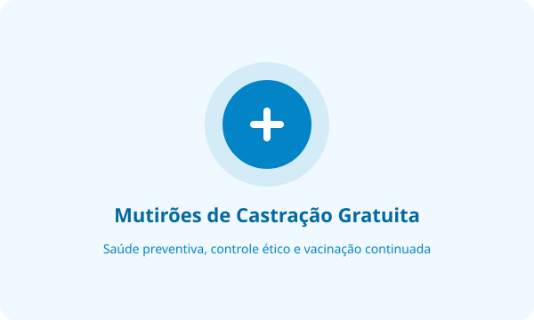
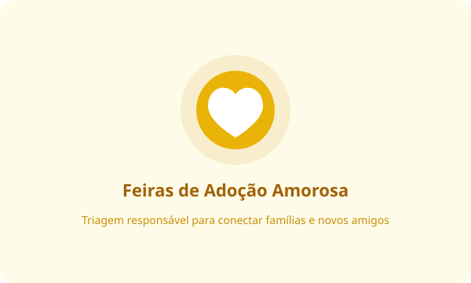

Mutirões Solidários de Castração
Esterilização cirúrgica ética e aplicação periódica de vacinas polivalentes em comunidades de extrema vulnerabilidade social.
Nossas iniciativas contínuas visam solucionar a raiz do problema do abandono animal com foco em saúde e inclusão comunitária.

Esterilização cirúrgica ética e aplicação periódica de vacinas polivalentes em comunidades de extrema vulnerabilidade social.

Eventos presenciais semanais com acompanhamento veterinário e entrevistas de compatibilidade para tutores e pets.
Todas as nossas operações são custeadas exclusivamente pela sociedade civil. A sua doação financia rações terapêuticas, medicamentos e cirurgias veterinárias de emergência.
Utilize nossa chave oficial CNPJ para transferir qualquer quantia:
00.000.000/0001-00
Favorecido: Associação Beneficente Esperança Viva | Banco do Brasil